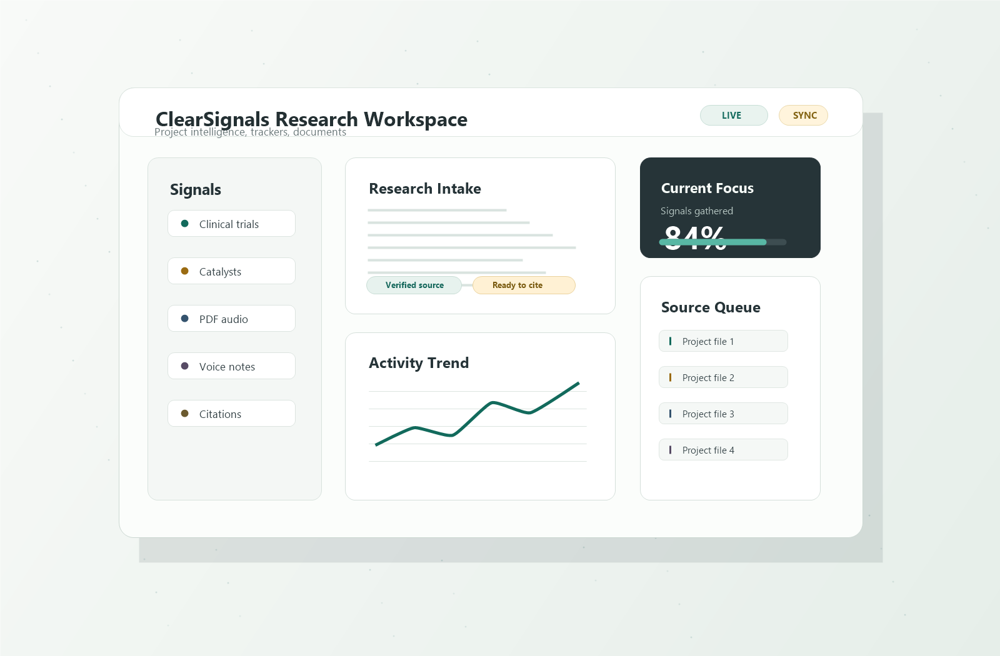

Research signals, gathered clearly
clearsignals
A focused information workspace for students, teachers, and researchers who need to gather, listen to, track, and organize project material without losing the thread.

4
focused tools
Built from years of consulting across science, business, and finance, ClearSignals helps students, researchers, and teachers enhance their workflow with practical tools for gathering information, tracking important signals, listening to source material, and turning ideas into usable notes.
Tool directory
Choose the right signal for the work in front of you.
Clinical Trial Tracker
Follow trial movement, updates, and research signals in a clean tracking view.
Open app
Catalyst Tracker
Monitor upcoming catalysts and organize the events that matter to a project.
Open app
Text to Speech for PDFs and Textbooks
Turn long reading assignments, PDFs, and textbook chapters into listenable material.
Open app
VoiceScribe
Capture spoken thoughts and convert research notes into clearer written material.
Open app